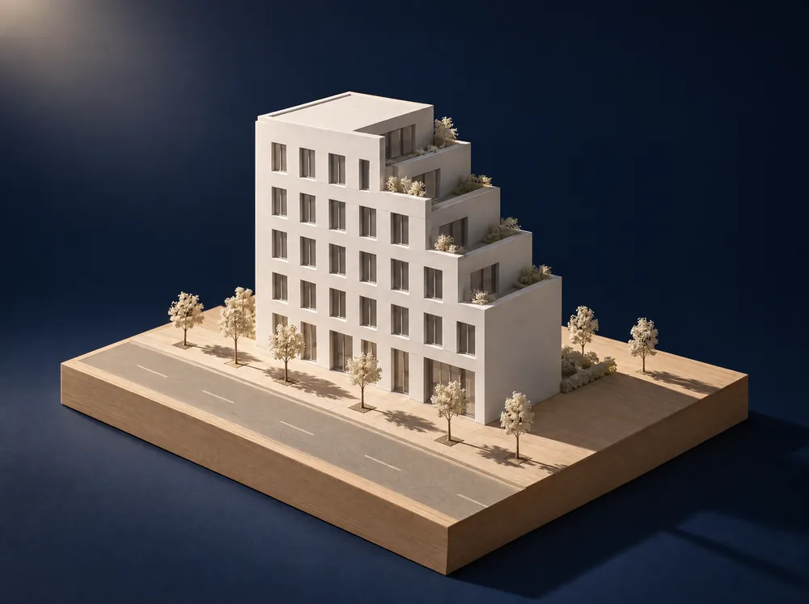

토지 가치, 개발 가능성, 건축 규모, 건축비와 부담금, 최종 수익률까지 한 번에 이어지는 수업용·상담용 플로우입니다.
수업과 상담에서는 도구 이름보다 판단 순서가 중요합니다. 토지를 받았을 때 먼저 가치와 개발 가능성을 보고, 그 다음 건축 규모와 비용, 마지막으로 사업성이 남는지를 확인해야 합니다.
그래서 이 사이트는 도구 설명을 앞에 두지 않고, 실제 개발 검토 흐름을 중심으로 다시 정리했습니다. 먼저 토지와 사업성 판단 흐름을 완성한 뒤, 필요한 보조 도구는 나중에 별도 메뉴로 붙이면 됩니다.
"토지 → 가능성 → 건축 → 비용 → 사업성. 이 순서가 흔들리면 상담도, 투자 판단도 흔들립니다."
토지를 받는 순간부터 가치 분석, 건축 가능성 판단, 건물 매스, 비용, 수익률 판단까지 한 장면으로 보여줍니다. 마우스를 올리면 단계 카드가 깊이감 있게 떠오릅니다.
각 단계는 독립된 계산기가 아니라 하나의 상담 흐름으로 연결됩니다.
주소, 면적, 용도지역, 공시지가, 주변 시세를 기준으로 토지의 기본 가치를 먼저 봅니다.
토지부터 입력 → 02용도지역, 도로, 농지·산지, 개발행위허가, 조례 제한을 체크합니다.
가능성 체크 →
대지면적, 건폐율, 용적률, 주차장, 일조사선으로 건물 매스를 시각화합니다.
건물 규모 보기 → 04건축비, 지하층, 주차장 설치비, 농지·산지·개발부담금을 한 번에 계산합니다.
총사업비 보기 → 05토지비, 금융비, 매출, 예상 이익, 투자수익률과 손익분기 분양가를 확인합니다.
수익률 판단 →먼저 토지 가치와 개발 가능성을 정리한 뒤, 건축 시뮬레이션과 비용·사업성 시뮬레이션으로 이어가면 됩니다.
이 사이트의 중심은 토지 판단, 건축 가능성, 건축·비용·사업성 시뮬레이션입니다. AI 도구는 그 흐름을 더 빠르게 정리하고 보고서화하기 위한 보조 도구로 배치했습니다.